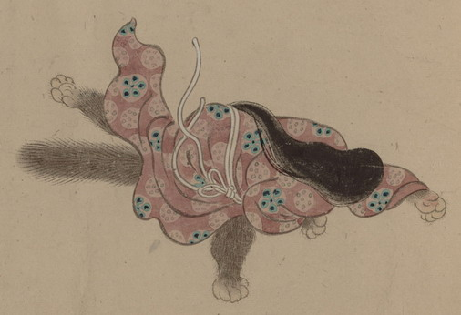

狐女の化物。小豆色の着物をふり乱しながら、踊るようにかけ出している。腕、脚、尻尾は獣のものである。
出典：親書誌：U426_nichibunken_0154：妖怪絵巻；ヨウカイエマキ／日付：2010／資源識別子：U426_nichibunken_0154_0086_0000
Copyright (c)2010- International Research Center for Japanese Studies, Kyoto, Japan. All rights reserved.